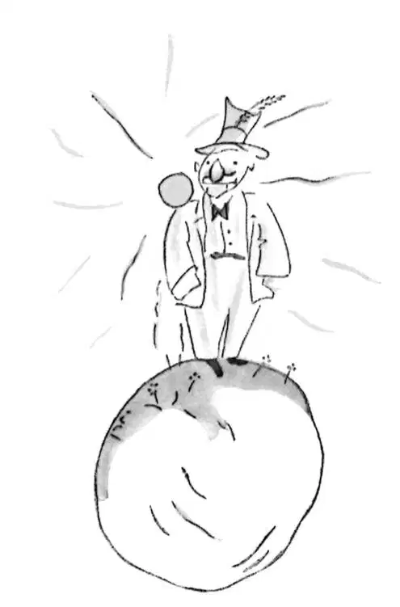

CHAPTER 11
第十一章
—the little prince visits the conceited man
——小王子拜访自大狂
The second planet was inhabited by a conceited man.
第二个星球上住着一个自大狂。
"Ah! Ah! I am about to receive a visit from an admirer!" he exclaimed from afar, when he first saw the little prince coming.
“啊！啊！我正来迎接呢，一个仰慕我的人来啦！”一看到小王子来了，他老远就高声喊道。
For, to conceited men, all other men are admirers.
因为，对自负的人来说，其他人都是他的仰慕者。
"Good morning," said the little prince. "That is a queer hat you are wearing."
“早上好。”小王子说道，“你戴的帽子好奇怪。”
"It is a hat for salutes," the conceited man replied. "It is to raise in salute when people acclaim me. Unfortunately, nobody at all ever passes this way."
“这顶帽子是用来致意的。”自大狂回答。“人们为我欢呼的时候，我好举起它致意。不幸的是，根本没有人从这儿经过。”
"Yes?" said the little prince, who did not understand what the conceited man was talking about.
“是吗？”小王子问，他不明白这个自大狂在说什么。
"Clap your hands, one against the other," the conceited man now directed him.
“拍手，一只手放在另一只上。”自大狂教他。
The little prince clapped his hands. The conceited man raised his hat in a modest salute.
小王子拍起手来。自大狂就举起帽子谦逊地向他致意。

"This is more entertaining than the visit to the king," the little prince said to himself. And he began again to clap his hands, one against the other. The conceited man again raised his hat in salute.
“这比拜访那个国王有趣多了。”小王子自言自语道。然后他又拍起手来，一只手拍着另一只。自大狂再次举起帽子致意。
After five minutes of this exercise the little prince grew tired of the game's monotony.
反复做了五分钟后，小王子觉得这个游戏很单调，没什么意思。
"And what should one do to make the hat come down?" he asked.
“该怎么做才能把帽子拿下来呢？”他问道。
But the conceited man did not hear him. Conceited people never hear anything but praise.
可自大狂没有听到他的问话。自大的人除了赞扬的话，什么都不会听到。
"Do you really admire me very much?" he demanded of the little prince.
“你真的非常仰慕我吗？”他问小王子。
"What does that mean—'admire'?"
“‘仰慕’是什么意思啊？”
"To admire mean that you regard me as the handsomest, the best-dressed, the richest, and the most intelligent man on this planet.”
“仰慕的意思就是，你认为我是这个星球上最英俊、穿得最好、最富有、最聪明的人。”
"But you are the only man on your planet!"
“可是，你是你的星球上唯一的人呀！”
"Do me this kindness. Admire me just the same."
“帮我这个忙吧。还是仰慕我吧。”
"I admire you," said the little prince, shrugging his shoulders slightly, "but what is there in that to interest you so much?"
“我仰慕你，”小王子微微耸耸肩说道，“可到底是什么东西让你对此这么感兴趣呢？”
And the little prince went away.
于是小王子就离开了。
"The grown-ups are certainly very odd," he said to himself, as he continued on his journey.
“大人们果真非常怪异。”他一边继续赶路，一边咕哝着。